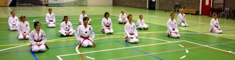

Innlegg
9.6.2012 Gradring

Vi gratulerer ale som besto graderingen. Men det var flere som ikke fikk nytt belte denne gangen. For de som ikke fikk nytt belte så er det bare en ting og gjøre og det er å trene mer. Eller mer riktig til neste gradering. Ta til dere den veiledning dere fikk av master Jon. Og ta det med dere på trening og stå på.